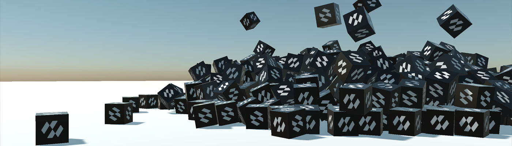

Migrating from Bullet

Evergine's physics has been rebuilt on Jolt Physics, replacing Bullet. Every component has a new name, several have been merged, and a few concepts work differently.
This page is the map from the old API to the new one. Most of the mechanical part of the work is done by the migration tool at the end of the page; the tables are for reading its report and for the pieces it leaves to you.
What changed and why
| Before | Now | |
|---|---|---|
| Engine | Bullet, through the Evergine.Bullet package |
Jolt, built into Evergine.Framework |
| Namespace | Evergine.Framework.Physics3D |
Evergine.Framework.Physics |
| Suffix | RigidBody3D, BoxCollider3D, HingeJoint3D |
RigidBody, BoxCollider, HingeConstraint |
| Backend | An abstract manager with a Bullet implementation | One concrete PhysicsManager |
| Package | Evergine.Bullet had to be installed |
Nothing to install |
Three things come with the change: the solver is built to use several cores, it can be made deterministic, and it brings soft bodies, tracked vehicles, height fields and plane colliders, none of which existed before.
The Manager
// Before
this.Managers.AddManager<PhysicManager3D>(new Evergine.Bullet.BulletPhysicManager3D());
// Now
this.Managers.AddManager(new Evergine.Framework.Physics.PhysicsManager());
There is no abstract base and no backend to choose. SceneManagers.PhysicManager3D is gone too. Bind to the manager instead:
[BindSceneManager]
private PhysicsManager physicsManager = null;
Bodies
| Bullet | Jolt | Notes |
|---|---|---|
RigidBody3D |
RigidBody |
Dynamic by default; IsKinematic = true for a kinematic one. |
StaticBody3D |
StaticBody |
Still a component of its own, and now with no motion properties at all. |
BulletGhostBody3D |
StaticBody or RigidBody |
With IsSensor = true. Static if it stays put, kinematic if it moves. |
PhysicBodyType (a RigidBodyType3D) |
Removed. | Kinematic and Dynamic are the two values of RigidBody.IsKinematic; static is a choice of component. |
| None. | PhysicsBody |
The new base class of both. Colliders, constraints, queries and collision events hand bodies out as this type. |
Note
A code-created StaticBody3D ghost that followed the cursor, a controller or a hand has to become a kinematic RigidBody. Bullet paired static ghosts with everything; Jolt never generates a contact between two static bodies. If the sensor must also notice static geometry, set CollideKinematicVsNonDynamic on it. See Sensors.
| Property | Bullet | Jolt |
|---|---|---|
| Axis locking | LinearFactor, AngularFactor (0 to 1 per axis) |
AllowedDegreesOfFreedom, a flags enum that locks an axis exactly rather than scaling it. |
| Per-body gravity | OverrideGravity + Gravity (a vector) |
GravityFactor, a scalar multiplying the world's gravity. |
| Inertia | LocalInertia (a tensor) |
InertiaMultiplier, a scalar scaling the inertia computed from the shape. |
| Rolling friction | RollingFriction |
Removed. Use AngularDamping to stop things rolling for ever. |
| Mass | Mass, default 1 |
Mass, default 0, which means "work it out from the colliders' Density". |
| Friction | default 0.5 | default 0.2. |
| Damping | default 0 | default 0.05 for both linear and angular. |
| Collision filtering | CollisionCategory + MaskBits per body |
CollisionCategory per body, plus one collision matrix on the world. There is no per-body mask any more: the old category/mask pairs become entries of the matrix, which the migration tool generates from the masks it finds in the project. |
Methods
| Bullet | Jolt |
|---|---|
ApplyForce(force) |
ApplyForce(force) |
ApplyForceAtPosition(force, position) |
ApplyForce(force, worldPosition) |
ApplyImpulse(impulse) |
ApplyImpulse(impulse) |
ApplyImpulseAtPosition(impulse, position) |
ApplyImpulse(impulse, worldPosition) |
ApplyTorque(torque) |
ApplyTorque(torque) |
ApplyTorqueImpulse(impulse) |
ApplyAngularImpulse(impulse) |
ClearForces() |
Removed. Forces are cleared at the end of each step. |
| None. | MoveTo, Teleport, ApplyBuoyancy, GetPointVelocity, InvalidateShape |
Important
Kinematic bodies now have a proper way to be moved: MoveTo(position, orientation). It generates the velocity needed to get there this step, so the body pushes and carries as it should. Writing the Transform3D teleports it and drops whatever was standing on it.
Colliders
| Bullet | Jolt | Notes |
|---|---|---|
Collider3D |
Collider |
|
BoxCollider3D |
BoxCollider |
|
SphereCollider3D |
SphereCollider |
|
CapsuleCollider3D |
CapsuleCollider |
|
CylinderCollider3D |
CylinderCollider |
|
ConeCollider3D |
TaperedCylinderCollider |
The old radius becomes BottomRadius and TopRadius stays at 0. A cone is a tapered cylinder. |
MeshCollider3D |
MeshCollider |
MeshType = TriangleMesh. |
BulletConvexHullCollider3D |
MeshCollider |
MeshType = ConvexHull, which is the default. |
BulletCompoundCollider3D |
Removed. | A body builds a compound from every collider on its entity and its descendants, automatically. |
| None. | TaperedCapsuleCollider |
New. |
| None. | PlaneCollider |
New. |
| None. | HeightFieldCollider |
New, and deformable at run time. |
| Property | Bullet | Jolt |
|---|---|---|
| Dimensions | Factors of the model's bounds: a Size of 1 fitted the mesh. |
Local units by default. UseModelBounds restores the Bullet convention, and the migration tool switches it on for every migrated primitive collider and vehicle wheel. |
| Entity scale | Applied to the model, not always to the collider. | Baked into the native shape: a unit collider on a scaled entity collides at the size it is drawn. |
| Collision margin | Margin, 0.04 |
ConvexRadius, 0.05, on the shapes that have one. |
| Density | None. | Density, 1000 kg/m³, which is what a body's mass is computed from. |
| Compound | BulletCompoundCollider3D |
The hierarchy. A child collider moved at run time updates the compound in place. |
Joints become Constraints
| Bullet | Jolt |
|---|---|
FixedJoint3D |
FixedConstraint |
PointToPointJoint3D |
PointConstraint |
HingeJoint3D |
HingeConstraint |
SliderJoint3D |
SliderConstraint |
ConeTwistJoint3D |
SwingTwistConstraint |
GearJoint3D |
GearConstraint |
Generic6DofJoint3D |
SixDOFConstraint |
Generic6DofSpringJoint3D |
SixDOFConstraint with LimitsSpring |
SpringJoint3D |
No direct equivalent. Springs are a property of a limit: LimitsSpring on a hinge, slider or distance constraint, or a six DOF constraint. |
| None. | DistanceConstraint, ConeConstraint, RackAndPinionConstraint, PulleyConstraint, all new. |
The IXxxJoint3D interfaces and the XxxJointDef3D structs are gone: a constraint is a component and nothing else.
| Property | Bullet | Jolt |
|---|---|---|
| Breaking | BreakPoint |
IsBreakable + BreakForce + BreakTorque, plus a Broken event. |
| Auto anchor | AutoConfigureConnected |
AutoConfigureConnectedAnchor |
| Motors | UseMotor, MotorTargetVelocity, MotorTargetImpulse |
MotorMode (Off/Velocity/Position), TargetAngularVelocity/TargetVelocity, TargetAngle/TargetPosition, MaxMotorTorque/MaxMotorForce. |
| Soft limits | LimitSoftness, LimitBiasFactor, LimitRelaxationFactor |
LimitsSpring, a SpringParameters in frequency-and-damping or stiffness-and-damping terms. |
Character Controller
| Bullet | Jolt |
|---|---|
CharacterController3D |
CharacterController |
StepHeight |
StepHeight |
MaxSlope (45°) |
MaxSlopeAngle (π/4, in radians) |
FallSpeed, Gravity |
ApplyGravity, plus the world's gravity |
JumpSpeed |
An argument to Jump(speed) |
SetVelocity(v) |
LinearVelocity |
Teleport(p) |
Teleport(p) |
Three real differences:
- It is built on Jolt's
CharacterVirtualand is not a rigid body. Do not add aRigidBodyor aColliderto the same entity. - The entity's origin is at the character's feet, not the middle of its capsule.
- Write only the horizontal part of
LinearVelocity. The component owns the vertical.
Vehicles
| Bullet | Jolt |
|---|---|
PhysicVehicle3D |
WheeledVehicleController |
PhysicWheel3D |
VehicleWheel |
ApplyEngineForce, SetSteeringValue, SetBrake |
One call: SetDriverInput(forward, right, brake, handBrake) |
SearchVehicle, PhysicVehicleEntityPath |
Removed. Wheels are child entities and are found by walking the hierarchy. |
SuspensionStiffness, SuspensionCompression |
SuspensionSpring, a SpringParameters. |
MaxSuspensionTravel, SuspensionRestLength |
SuspensionMinLength, SuspensionMaxLength. |
IsSteerableWheel |
MaxSteerAngle. Zero means it does not steer. |
IsDriveWheel |
FrontWheelDrive / RearWheelDrive on the controller. |
IsBrakableWheel |
MaxBrakeTorque. Zero means it does not brake. |
| None. | TrackedVehicleController, new. |
Queries
| Bullet | Jolt |
|---|---|
RayCast(ref from, ref to, filterMask) |
RayCast(origin, direction, maxDistance, in filter, out hit) |
RayCastAll(...) |
RayCastAll(origin, direction, maxDistance, results, in filter) |
ConvexSweepTest(...) |
ShapeCast, SphereCast, BoxCast |
ConvexSweepTestAll(...) |
ShapeCastAll(...) |
PointTest(...) |
OverlapPoint, OverlapPointAll |
ContactTest(...) |
OverlapSphere, OverlapBox, OverlapShape, OverlapAABox |
ContactPairTest(...) |
WereBodiesInContact(first, second) |
HitResult3D |
RayCastHit, ShapeCastHit, OverlapHit |
| A category mask argument | A QueryFilter struct: categories, sensors, an ignored body and a predicate. |
Rays are now given an origin, a direction and a distance rather than two points, and hits carry both Distance and Fraction. Every hit's Body is a PhysicsBody; code that applied an impulse to whatever a ray hit needs hit.Body as RigidBody first.
Important
Bullet's ray casts hit ghost objects. Jolt's skip sensors unless the filter says otherwise, so a migrated ray cast that used to stop at a trigger volume needs a QueryFilter with IncludeSensors = true. The migration tool writes that filter into the ray casts it converts.
Collisions
| Bullet | Jolt |
|---|---|
BeginCollision |
CollisionStarted |
UpdateCollision |
CollisionUpdated |
EndCollision |
CollisionEnded |
CollisionInfo3D |
CollisionInfo |
ContactPoint3D |
Folded into CollisionInfo: Point, Normal, PenetrationDepth, PointCount. |
Events are now raised once per pair of bodies rather than per pair of sub-shapes, and always on the main thread after the step.
Manager Settings
| Bullet | Jolt |
|---|---|
PerformPhysicSteps |
IsSimulationEnabled |
MaxSubSteps |
MaxStepsPerFrame |
PhysicWorldResolution |
CollisionSteps |
FixedTimeStep |
FixedTimeStep |
ApplySpeculativeContactRestitution |
SpeculativeContactDistance |
DrawFlags / DebugDrawFlags |
DebugFlags, a PhysicsDebugFlags |
SetDebugDraw() / DebugDraw() |
Removed. One property does it. |
InternalWorld |
NativePhysicsSystem, NativeBodyInterface |
OnPhysicStep |
PhysicsStepStarting, PhysicsStepCompleted, SimulationUpdated |
Migration Tool
A PowerShell script does the mechanical part of all of the above, on the C# source, the project files and the .wescene and .weprefab assets of a project. Download it and keep it anywhere outside the project:
Download Migrate-BulletToJolt.ps1
Windows marks a downloaded script as coming from the internet, and the default execution policy refuses to run it. Run Unblock-File .\Migrate-BulletToJolt.ps1 once after downloading it.
It takes a project directory, a .sln, .slnx, .csproj or .weproj. Handed a solution that also references an Evergine checkout or another repository, it confines itself to the Git repository that owns the solution and reports the projects it left alone. It is a dry run unless -Apply is given, so the first run costs nothing.
Recommended process
Commit, or otherwise keep, the current state of the project.
Run it dry and write the findings to a file:
pwsh -File .\Migrate-BulletToJolt.ps1 ` -ProjectPath D:\Projects\MyGame\MyGame.Windows.sln ` -ReportPath D:\Projects\MyGame\bullet-to-jolt-report.jsonRead the list of files it would change and every warning in the report.
Apply it:
pwsh -File .\Migrate-BulletToJolt.ps1 ` -ProjectPath D:\Projects\MyGame\MyGame.Windows.sln ` -ApplyThe originals of every changed file, and the report, are kept under
<project>\.bullet-to-jolt-backup\<timestamp>\unless-NoBackupsays otherwise.Rebuild the content. Generated assets are deliberately not touched; their source
.wesceneand.weprefabfiles are what was migrated.Build the C# projects and work through what the report flagged.
Run the project with debug rendering on and check collider placement, sensors, constraints and vehicle wheels.
Run the tool dry once more. A fully migrated project reports zero changed files.
| Switch | Purpose |
|---|---|
| -Apply | Writes the migration. Without it nothing on disk changes. |
| -AssetsOnly | Migrates the scene and prefab sources only, leaving the C# alone. |
| -NoBackup | Skips the timestamped backup. Only when source control already protects the tree. |
| -ReportPath <file> | Writes the full JSON report to a path of your choosing instead of the backup folder. |
| -StabilizeConstraintChains | Raises the masses and solver iterations of light constraint chains that carry a heavy vehicle, a plank bridge for instance. Without it the masses are kept and the report names each fragile chain. |
| -TuneVehicleChassis | Lowers each migrated vehicle's centre of mass and gives the chassis moderate inertia and angular damping, so a direct copy of the Bullet profile does not wheelie. |
What it does
- Removes the
Evergine.BulletandEvergine.LibBulletcpackage and project references. - Renames the namespace, the manager, and every body, collider, constraint, vehicle and query type, in code and in serialized components.
- Migrates
.wesceneand.weprefabcomponent types and the properties that have an equivalent. - Turns
PhysicBodyTypeintoIsKinematic, in assets and in C# comparisons and assignments, andStaticBody3DintoStaticBody. - Switches on
UseModelBoundson every legacy primitive collider and vehicle wheel, including colliders created from C#, so their dimensions keep meaning what they meant. - Converts collider offsets and orientations,
MargintoConvexRadiuswhere a convex radius makes sense, CCD toMotionQuality.LinearCast, linear and angular factors toAllowedDegreesOfFreedom, and inherited negative solver iteration counts to the new zero sentinel. - Converts the common
RayCastforms to thebool/out RayCastHitAPI, with a filter that still hits sensors. - Replaces dictionaries keyed by
CollisionInfo.Idwith(ThisCollider, OtherCollider)keys where it can prove the pattern, so simultaneous contacts from different sensors stay distinct. - Folds adjacent
ApplyEngineForce,SetSteeringValueandSetBrakecalls into oneSetDriverInput. - Builds a collision matrix from every category/mask pair it finds in assets and code, and writes it on the
PhysicsManager, in the scene or where the manager is created in C#. When bodies of one category used different masks, it enables the union, so nothing that collided in Bullet passes through. - Derives each wheel's radius, position and suspension, and the engine and wheel profile, from the original Bullet values, so a migrated car does not sink its wheels into the ground.
-TuneVehicleChassisalso retunes the chassis. - Reports constraint chains that carry a heavy load, and stabilizes them with
-StabilizeConstraintChains. - Sets
CollideKinematicVsNonDynamicon serialized kinematic sensors. - Scans every relevant C# file in the repository, not just the startup project, and is idempotent: running it again rewrites nothing.
What it leaves to you
The report keeps a warning for every conversion where the two engines do not mean the same thing:
MaskBitsin code. The generated matrix covers the masks the tool can read. A mask set from an expression it cannot evaluate, or read back from a body, is reported with its original expression: reproduce it withSetCollisionEnabled, and make sure rays and moving sensors exclude their own category where they should, or a cursor ray can hit its own sensor. If noPhysicsManagerwas found, the report gives the matrix to assign by hand.- Static sensors that move. A code-created
StaticBodyghost that follows a cursor, controller or hand has to become a kinematicRigidBody. - Vehicles. Check the wheel order, the steering and drive indices and the visual wheel transforms, then retune torque, brakes, grip and suspension for the handling you want.
- Constraints whose Bullet angular limits or motors have no exact equivalent.
- Custom inertia and per-body gravity where the report flags them.
- Custom query code (
RayCastAll, sweeps, contact and point tests) that does not match one of the patterns the tool converts safely. - Cones.
ConeCollider3Dbecomes aTaperedCylinderColliderwith the old radius inBottomRadiusandTopRadiusat zero; check the result looks right.
Migration Checklist
For a project migrated by hand, or for checking one the tool has been through:
- Remove the
Evergine.Bulletpackage reference. Nothing replaces it; the new physics ships inEvergine.Framework. - Change the manager registration to
new Evergine.Framework.Physics.PhysicsManager(). - Change the using from
Evergine.Framework.Physics3DtoEvergine.Framework.Physics. - Rename the components using the tables above, in code and in the
.wesceneand.weprefabsources. This is the part the migration tool does for you. - Replace
StaticBody3DwithStaticBody, andRigidBody3DwithRigidBody, settingIsKinematicwhere the body type wasKinematic. - Replace
LinearFactor/AngularFactorwithAllowedDegreesOfFreedom, andOverrideGravitywithGravityFactor. - Decide on collider units. Turn on
UseModelBoundsto keep the Bullet sizes, or re-author the colliders in local units. - Move collision filtering from per-body mask bits to the world's collision matrix.
- Rework the queries: two points become an origin, a direction and a distance, the mask argument becomes a
QueryFilter, and a ray that must stop at a trigger volume setsIncludeSensors. - Check the defaults. Friction is 0.2 rather than 0.5, damping is 0.05 rather than 0, and
Mass = 0now means "compute from density" rather than "static". - Turn on debug rendering (
RenderManager.DebugLines) and look at the scene. Shapes that were subtly wrong under the old margins and defaults are visible at a glance.